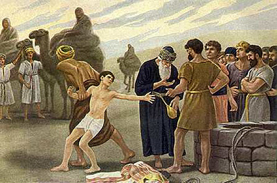

Home Quiz
Shadowland: Beginnings: Week 42
Genesis 37
Romans 8:30
Abraham predestined
Isaac In Isaac shall thy seed be called
Jacob justified
Joseph glorified

The story of Joseph is powerful type of Christ. For starters, no sin of
Joseph is recorded.
- 37:2 Joseph would later be named "Zaphnath–paaneah", "revealer of secrets"
by Pharaoh 41:45. This was a divine name.
"Behold this Child is set for the fall and rising again of many in
Israel; and for a sign which shall be spoken against . . . that the
thoughts of many hearts may be revealed" Luke 2:34,35
"feeding the flocks" - Joseph was a shepherd.
"brought their evil report" - "The world cannot hate you; but hates Me,
because I testify of it that the works thereof are evil" John 7:7
- 37:3 "coat of many colors" - a mark of distinction Judges 5:30.
It appears that Jacob considers Joseph the heir - despite being the
youngest. This did not engender love and respect. After Joseph is
gotten rid of, Reuben forfeits the birthright, Simeon and Levi are
passed over because of the Shechem affair, and Judah becomes the heir.
When Jacob blesses his sons in Egypt, he gives Joseph a double portion
by giving an inheritance to both of Joseph's sons (48:5).
- 37:4 "Israel loved Joseph more than all his children" as Jesus
is the most loved of His Father. "This is My beloved Son, in whom I am
well pleased" Matthew 3:17
"they hated him" - as the world hates Christ, because the Father
loves him.
- 37:5 "son of his old age" - Jesus is eternally begotten. This may also
be another indication that Joseph was made the heir.
- 37:8 "they hated him yet the more for his dreams and his words" -
"But now ye seek to kill Me, a man that hath told you the truth, which
I have heard of God" John 8:40.
- 37:11 "they envied him" - as the religious rulers envied Christ.
"For he knew that for envy they had delivered Him." Matthew 27:18
"his father observed the saying" - the future of Joseph was
announced beforehand, as was the future of Christ. "He shall be great,
and shall be called the Son of the Highest: and the Lord God shall give
unto Him the throne of His father David; and He shall reign over the
House of Jacob for ever: and of His kingdom there shall be no end" Luke
1:31-33
Where the first dream speaks of the earthly dominion of Christ,
the second dream speaks of the heavenly dominion of Christ.
"Nevertheless, I say unto you, Hereafter shall ye see the Son of Man
sitting on the right hand of power, and coming in the clouds of
heaven." Matthew 26:64 Isaiah 9:6-7
- 37:14 "Having yet therefore one son, His well-beloved, He sent Him also
last unto them, saying, They will reverence My Son." Mark 12:6
Joseph left Hebron, "fellowship", to enter Shechem, "service".
Jesus left Heaven to enter service on Earth. Phillipians 2:5-7
- 37:15 "What do you seek?" - "For the Son of Man came to seek and to save
the lost." Luke 19:10
- 37:17 "and found them in Dothan". Dothan means "law/custom".
"Laying aside the commandments of God, ye hold the traditions of men" Mark 9:8
- 37:18 "But those husbandmen said among themselves, This is the Heir; come,
let us kill Him, and the inheritance shall be ours." Mark 12:7
"Then the Pharisees went out and held a council again Him, how they
might destroy Him" Matthew 12:14
- 37:20 "we shall see what will become of his dreams" - Matthew 27:39-43
- 37:21 Reuben refused to conspire to kill Joseph. This is why
he was not included in the plot to massacre Schechem.
- 37:23 "they stripped Joseph" - "they stripped Him" Matthew 27:28
- 37:24 "the pit was empty, there was no water in it" -
"As for thee also, by the blood of thy covenant I have sent forth thy
prisoners out of the pit wherein is no water." Zechariah 9:11
- 37:26 Judah sold Joseph. Judas (the Greek form of Judah) sells Jesus.
- 37:27 "let not our hand be upon him" - "The Jews therefore said unto him,
It is not lawful for us to put any man to death! John 18:31
- 37:28 "20 pieces of silver" - "What will ye give me, and I will deliver
him unto you? And they covenanted with him for thirty pieces of
silver." Matthew 26:15
- 37:29 Reuben was not included in the plot to sell Joseph either.
- 37:31,32 "dipped the coat in blood...and presented it to their father"
Christ presents his own blood before the Father.
- 37:36 Jewish tradition holds that the brothers also sold
Dinah's daughter by Schechem to the Midianites, who in turn
sold her to Potiphar as well. Potiphar was childless, and so taken
that he adopted her and named her Asenath - who would become
Joseph's wife.